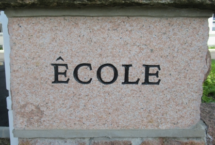

La majorité dé tchi qué j'ai vraiement bésoin d'saver entouor comment vivre et dé tchi faithe et comment s'comporter, j'apprîns à l'êcole pouor les p'tits éfants. La sagesse n'était pas au haut d'la montangne d'l'unnivèrsité, mais là dans l'creux à sablion.
Ches'chîn sont les choses qué j'apprîns.
Charez tout. Jouez sans disputes. Né vos entr'-battez pas. Èrmettez les choses où'est qu'ou les trouvîtes. Èrpathez vot' saleté. Né prannez pas autcheunes choses tchi n' vos appartcheint pas. Dites qué tu as r'gret quand ou faites ma à tchitchun. Ayiz les mains d'vant mangi. Né restez pas à rein n'faithe; êcoutez et apprannez un mio et pensez un mio, dessinnez et chantez; dansez et jouez; et travailliz châque jour.
Faites un somme châque arlévée. Quand ou sortez d'hors, méfi-ou lé trafi, entr'- t'nez les mains et restez ensembl'ye. Notez autcheunne mèrveil'ye. Èrsouv'n'-ou d'la p'tite graine dans la tâsse plastique, les rachinnes d'scendent et la pliante crait, et pèrsonne né sait vraiement pouortchi, mais j'sommes tous comme chenna.
Les rouogespaîssons et les 'hamsters' et les blianches souothis, et même la p'tite graine dans la tâsse plastique, i' meuthent tous, et même nous.
Et souv'n'ou iun des preunmié mots quand ous apprîntes à liéthe, la pus grand' pathole dé tout – èrgardez.
Pensez comme lé monde s'sait miyeu si tout l'monde prennaient des galettes et du lait dans les trais heuthes châque arlévée, et s'couchaient auve lus couvèrtuthes dé laine pouor faithe un somme. Ou, si nou-s-avait eune règl'ye fondamentale d'èrmettre tréjous toutes les choses où'est qu'nou les avait trouvées, et d'èrpather nos propres saleté.
Et, ch'est acouo vrai, d'autcheun âge, qué quand j'sortons d'hors, i'fait mus dé s'entr'-t'nîn les mains et d'rester ensembl'yes.
Traduction par Ralph Nichols; edité par Laurie Huëlin. 2006.
Viyiz étout: